Граф е дискретна структура која се сосотои од јазли и ребра кои ги поврзуваат јазлите
Дефиниција 1
Граф (неориентиран граф) `G = (V, E)` се состои од `V` - непразно множество од темиња (или јазли), и `E` множество од ребра. Секое ребро има еднен или два јазли поврзани со него кои се нарекуваат крајни точки. За реброто се вели дека ги поврува своите крајни точки.
Забелешка: Множеството на јазли може да биде бесконечно. Графот со бескраен број на јазли се нарекува бесконечен граф. Графот со конечен број на јазли се нарекува конечен граф.
Да претпоставиме дека една компјутерска мрежа е направена од центри на податоци и комуникациски врски помеѓу копјутерите. Локациата на секој центар на податоци можеме да го претставиме со точка а секоја комуникациска врска со отсечка, како што е прикажана на сликата 1.
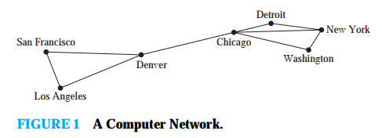Оваа компјутерска мрежа може да се моделира со користењена граф во кој јазлите ги претставуваат центрите на податоци а ребрата ги претставуваат комуникациските врски. Визуализација на граф се постигнува со употреба на точки за претставување на јазлите и отсечки (може и закривени) за претставување на ребрата. Кога се црта граф се трудиме ребрата да не се сечат.
Секое ребро во оваа мрежа поврзува два различни јазла, односно нема ребро кое поврзува јазол сам со себе. И уште повеќе нема различни ребра кои поврзуваат ист пар на јазли. Граф каде секое ребро поврзува два различни јазли и каде две ребра не поврзуваат ист пар на јазли се нарекува едноставен граф. Кај едноставниот граф секое ребро е поврзано со неподреден пар на јазли, и не постои друго ребро поврзано со ова ребро. Како последица на ова кога ребро кај простиот граф е поврзан со јазлите `{u, v}`, се вели дека `{u, v}` е ребро на графот.
Компјутерска мрежа може да има повеќе комуникациски врски помеѓу центрите на податоци, како што е покажано на сликата 2. Моделот на ваков граф има повеќе од едно ребро кое поврзува ист пар на јазли. Ваков граф се нарекува мултиграф. Кога графот има `m` различни ребра поврзани со ист пар на јазли `{u, v}`, се вели дека `{u, v}` е ребро од мноштвото `m`. Ова множество на ребра можеме да го посматраме како `m` различни копии на на реброто `{u, v}`.
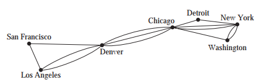Некогаш комуникациските врски го поврзуваат комуникацискиот центар сам со себе (како повратна врска за дијагностички намени). Ваквата мрежа е претсатавена на сликата 3. За да се моделира оваа мрежа потребно е да се вклучат ребра кои поврзуваат јазел сам со себе. Вакви ребра се нарекуваат алки. Графот кој вклучува алки, и има повеќе ребра кои поврзуваат ист пар на јазли се нарекува псеудограф.
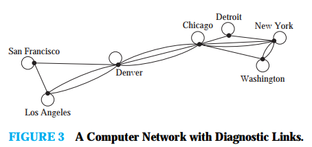Досега прикажаните графови се неориентирани графови. Нивните ребра се исто така неориентирани. Некогаш, за да се конструира модел на граф, потребно е да се придружи смер на ребрата на графот. На пример во компјутерска мрежа некои комуникациски врски можат да оперираат само во една насока. Ова е случај кога огромниот дел од сообраќајот е во еден смер кон центар на податоци и сосем мал или никаков сообраќај во другиот смер. Ваква мрежа е претставена на сликата 4.
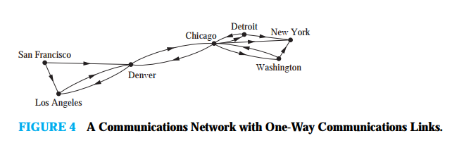За да се претстави ваква мрежа го користиме ориентираниот граф. Секое ребро кај ориентираниот граф е поврзан со подреден пар на јазли.
Дефиниција 2
Ориентиран граф (диграф) `G = (V, E)` се состои од `V` - непразно множество од темиња (или јазли), и `E` и множество од ориентирани ребра (лаци). Секое ориентирано ребро е поврзано со подреден пар на јазли. За ориентираното ребро поврзано со подредениот пар `(u, v)` се вели дека почнува во `u` а завршува во `v`.
За прикажување на ориентиран граф се користи стрелка која покажува кон од `u` кон `v` за да го прикаже смерот на реброто кое почнува во `u` а завршува во `v`. Ориентираниот граф може да има алки и да содржи повеќе ориентирани ребра кои почнуваат и завршуваат во исти јазли. Ориентираниот граф може да содржи ориентирани ребра кои ги поврзуваат јазлите `u` и `v` во двата смера. Кога ориентираниот граф нема алки и повеќе ориентирани ребра, се нарекува едноставен ориентиран граф.
Во некои компјутерски мрежи постојат повеќе комуникациски врски помеѓу центрите за податоци, како што е прикажано на слика 5. За да се прикаже ваква мрежа се употребува ориентиран граф кој може да има повеќе ориентирани ребра од еден јазол до друг (може и истиот) јазол. Овој граф го викаме ориентиран мулти граф. Кога има `m` ориентирани ребра, секое поврзано на подреден пар на јазли `(u, v)`, велиме дека `(u, v)` e ребро со `m` кратност.
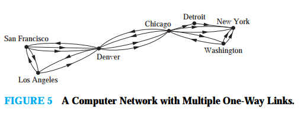За некои модели се потребни графови каде некои ребра се неориентирани, додека другите се ориентирани. Граф кој има и ориентирани и не ориентирани ребра се вика мешан граф. На пример, мешаниот граф може да се користи за да се прикаже мрежа која има комуникациски врски во двата смера и комуникациски врски кои работат само во еден смер.
Оваа терминологија за различни видови на графови е претставена во табелата 1. Терминот граф некогаш се користи како општ поим за да опише граф со ориентирани или неориентирани ребра, со или без алки, со или без повеќекратни ребра. Во други случаии терминот граф се однесува само на неориентирани графови.
| Табела 1 | |||
| тип | ребра | повеќе кратни ребра | алки |
| Едноставен граф | неориентирани | не | не |
| Мултиграф | неориентирани | да | не |
| Псеудограф | неориентирани | да | да |
| Едноставен ориентиран граф | ориентирани | не | не |
| Ориентиран граф | ориентирани | не | не |
| Ориентиран мултиграф | ориентирани | да | да |
| Мешан граф | не ориентирани и ориентирани | да | да |
Бидејки графот наоѓа примена во многу различни дисциплини, постојат многу различни терминологии. Терминологијата која ја употребуваат математичарите е високо стандардизирана, но терминологијата која се употребува во другите дисциплини доста отстапува. Иако терминолгијата која се користи за да се опише графе отстапува, три клучни прашања можат да помогнат при одредување на структурата на графот.
- Дали ребрата се ориентирани, неориентирани или и двете?
- Ако графот е неориентиран, дали има повеќе кратни ребра кои поврзуваат ист пар на јазли? Ако графот е ориентиран дали постојат повеќекратни ребра?
- Дали има алки.
Одговорите на овие прашања помагаат да се разбере структурата на графот. Помалку е важно да се пaмти одредена терминологија. А и за решавање на задачи ова е најважно да се знае
Модели на граф
Графовите се употребуваат во голем број на модели.
Некои од најпознатите социални графови се:
Пример 1. Граф на познанства и пријатели Едноставниот граф може да се употреби за да се прикаже дали две лица се познаваат, односно дали се познаваат и дали се пријатели. Секое лице или одредена група на луѓе е претставена со јазол. За да се поврзат две лица се користи неориентирано ребро. Обично не се користат повеќе кратни ребра и алки. (За да прикажеме односот на самосвест треба да се употреби алка). Граф на познанства е претставен на сликата 6.

Пример 2. Граф на влијание при изучувањето на однесувањето на групите е установено дека одредени луѓе можат да влијата врз размислувањето на други луже. Ориентиран граф кој се нарекува граф на влијание може да се употреби за се моделира ова однесување. Секоја личност во графот е претставена со точка. Постојат ориентирани ребра од јазелот `a` кон јазелот `b` кога личноста претставена со јазелот `a` може да влијае на личноста претставена со јазелот `b`. Овој граф нема алки и нема повеќекратни ориентирани ребра. Пример за граф за членови на група е прикажан на сликата 7. Од овој модел на групата се гледа дека никој не влијаа на Deborah но таа влијае на Brian, Fred, and Linda. Исто така Yvonne и Brian меѓусебно си влијаат.
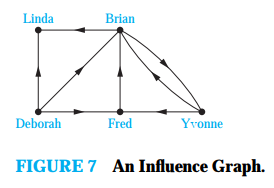Пример 3. Граф на соработка се употребува кога се моделира социјална мрежа каде две личности се поврзани работејки заедно. Овој граф е едноставен граф бидејки ребрата се неориентирани и нема повеќратни ребра и нема алки. Јазлите во овој граф ги претставуваат луѓето а две личности се поврзани со неориентирано ребро кога луѓето соработуваат. На пример графот на Холивуд е граф на соработка каде глумците се претставени со јазли а двајца глумци се поврзани со ребро ако работат на ист филм. Графот на Холивуд има преку 1.5 милиони јазли.
Комуникациски мрежи може да се моделираат разни комуникациски мреже каде јазлите претставуваат разни уреди а ребрата се комуникациски врски.
Пример 4. Телефонски разговори Графот на телфонски мрежи се користи за да се моделираат телефонски повици во мрежата. Ориентиран граф може да се употреби за да се моделираат телефонски повици каде секој телефонски број е претставен со јазол а секој повик е претставен со ориентирано ребро. Реброто кое претставува телефонски повик почнува од телефонскиот број од кого се врши повикот а завршува кај телефонскиот број кон кој се врши повикот. Ориентираниот граф се користи бидејки смерот во кој се врши повикот е важен. Потребни се повеќекратни ребра бидејки се сака да се претстави секој повик направен од одреден телефонски број кон друг телефонски број.
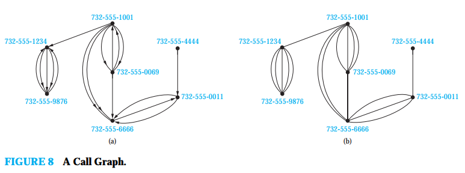Информацискии мрежи Графот на информациски мрежи се користи да се моделираат разни информациски мрежи кои поврзуваат разни типови на информации.
Пример 5. Web мрежа Оваа мрежа може да се моделира со ориентиран граф каде секоја web страна е претставена со јазол а каде реброто почнува на web страната `a` а завршува кај web страната `b`. Бидејки нови страни се креираата а други страни се отстрануваат секоја секунда графот на web мрежата се менува постојано.
Пример 6. Мрежа на цитирање Овој граф се употребува за да се претстават цитирања на различни типови на документи. Во овој тип на граф секој документ е претставен со јазол а реброто е од еден документ кон друг. Графот на цитирање е ориентиран граф без алки или повечекратни ребра.
Дизајн на софтверски апликации Графот е корисена алатка при дизајнирањето на софтвер.
Пример 7. Зависност на модули Една од најважните работи при дизајнирање на софтвер е како да се структуира програмот во различни делови или модули. Разбирањето како одредени модули делуваат е суштествено за дизијнирањето на програмот. Во овој граф секоја модула е претсавена со јазол. Постојат оријентирани ребра од модула кон друга модула. Пример на ваков граф е сликата 9.
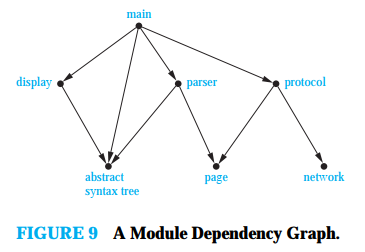Пример 8. Граф на приоритет и истовременост на извршување Компјутерските програми можат да се извршуваат побрзо ако одредени искази се извршуваат истовремено. Особено е важно при ова да не се извршуваат искази кои бараат резултати од искази кои се уште не се извршени. Зависноста на исказ од предходен исказ се претставува со ориентиран граф. Секој исказ е претставен со јазол и постои ребро од еден исказ кон друг исказ ако вториот исказ не може да се изврши пред првиот исказ. Резутантниот граф се нарекува граф на приоритет. Компјутерскиот програм и неговиот граф се претставени на сликата 10. На пример графот покажува дека исказот S5 не може да се изврши пред да се извршат исказите S1, S2 и S4.
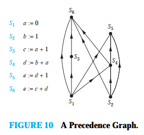Транспортни мрежи Овој граф се користи за да се моделираат многу различни транспорни мрежи како патишта, железница авио сообраќај и бродски сообраќај.
Пример 9. Авионски линии Авионската мрежа можеме да ја моделираме претставувајки го секој аеродром со јазол. Сите летови во еден ден можеме да ги моделираме користејки ориентирани ребра за да се претстави секој лет кој почнува од јазелот кој го претставува аеродромот на полетување а завршува во јазелот кој го претставуват аеродромот на слетување. Ваков граф типично е мултиграф бидејки од еден до друг аеродром во еден ден може да има повеќе летови.
Пример 10. Патна мрежа Графот исто така може да се користи за да се моделира патна мрежа. Во ваков граф, јазлите ги преставуваат вкрстувањата а ребрата патиштата. Кога сите патишта се автопати и кога најмалку еден пат спојува две вкрстувањаay може да се искористи едноставен неориентиран граф за да се моделира патната мрежа. Но во пракса се сака да се моделира патна мрежа каде одредени патишта не се едносмерни и каде има повеќе од еден пат помеѓу две дестинации. За да си изгради ваков модел се користат неориентирани ребра за да се прикажат двонасочните патишта и ориентирани ребра за да се претстават едносмерните патишта. Повеќекратните неориентирани ребра ги претставуваат повеќекратните двосмерни патишта кои поврзуваат две исти вкрстувања. Повеќекратните ориентирани ребра ги претставуваат повеќекратните едносмерни патишта кои почнуваат од едно вкрстување а завршуваат на друго вкрстување. Алките ги преставуваат заобиколните патишта. За да се моделира патна мрежа со автопатишта и двосмерни патишта потребен е мешан граф.
Биолошки мрежи Многу аспекти на биолошките науки може да се моделираат користејќи графови.
Пример 11. Граф на преклопување во екологијата Графовите се користат во многу модели кои вклучуваат интеракција на различни видови животни. На пример, конкуренцијата меѓу видовите во екосистемот може да се моделира со помош на граф на преклопување. Секој вид е претставен со јазол. Неориентирано ребро поврзува два јазли ако двете врсти претставени со овие јазли си конкурираат. (ова значи дека некои видови на храна кои ги користат двете врсти се исти). Графикот на преклопување е едноставен граф, бидејќи во овој модел не се потребни никакви алки или повеќектарни ребра. Графот на сликата 11 го моделира екосистемот на една шума. Од овој графикон гледаме дека верверичките и ракуните си конкурираат но дека врани и шкрилци (личи на глувче) не.
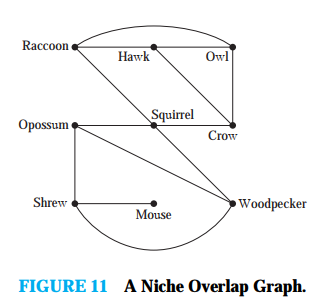Пример 12. Интеракција на протеини Интеракција на протеините во келијата се случува кога два или повеќе протеини во ќелијата се врзуваат за да остварат биолошка функција. Бидејки протеинската интеракција е суштествена за повеќето биолошки функции, многу научници работат на откривање на нови протеини и разбирањето на нивната интеракција . Интеракцијата на протеините во ќелијата може да се моделира со употреба на графот за интеракција на протеините кој е неориентиран граф каде секој протеин е претставен со јазол со ребро кое поврзува јазли кои претставуваат протеини кои се во интеракција.
Бидејки во една типична келија има илијадници протеини графот на интеракција на протеини е голем и сложен. На пример келијата на квасецот има повеќе од 6000 протеини и повеќе од 80 000 досега познатаи интеракции а келијата на човекот има повеќе од 100 000 протеини со претпоставка дека има околу 1 000 000 интеракции. Поради сложеноста на графот на интеракција на протеини тој се дели на помали модули кои претставуваат групи на протеини кои се вклучени во одредена функција на келијата. Сликата 12 прикажува модула на граф на интеракција на протеини.
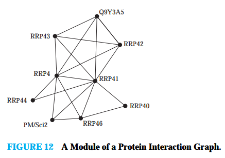Турнир Овде ќе дадеме пример на граф со кој може да се моделираат различни турнири.
Пример 13. Round-Robin турнир е турнир каде секој тим игра со секој друг тим точно еднаш и не е дозволе нерешен резултат. Ваков турнир може да се моделира со употреба на ориентиран граф каде секој тим е претставен со јазол. Реброто `(a, b)` означува дека тимот a го победил тимот b. Овој граф е едноставен ориентиран граф кој не содржи алки или повеќекратни ребра ( бидејки тимовите играат само еднаш меќусебно). Ваков граф е претставен на сликата 13. Од овој граф се гледа дека тимот 1 во овој турнир нема пораз а тимот 3 е без победа.
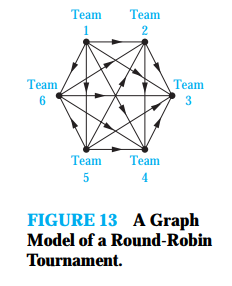Пример 14. Турнир на елиминација е турнир каде секој тим е елиминиран после претрпен пораз. Ова е чест облик на турнир, вклучувајки ги турнирите во тенис и NCAA кошаркарски шампионат. Ваков турнир се моделира кога јазлите го претставуваат секој натпревар а ориентираното ребро го поврзува натпреварот со другиот натпревар кој ќе го игра победникот. Графот претставен на сликата 16 ги претставува финалните 16 тима во женската NCAA кожаркарска лига.
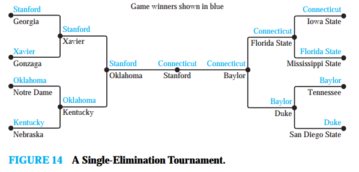------ EOP ------